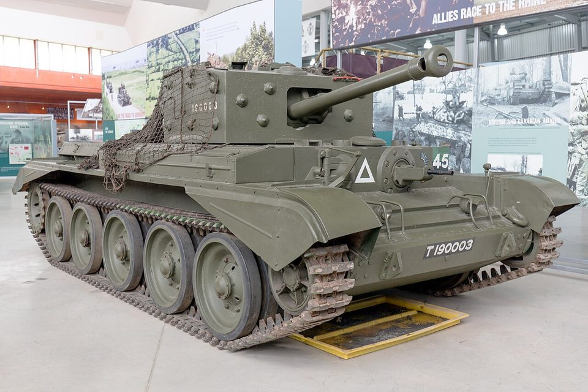

Todos los tanques › Por país › Reino Unido
Tanques del Reino Unido
El Reino Unido inventó el carro de combate en 1916 y, tras años de dividir sus diseños entre carros de crucero y de infantería, creó con el Centurion uno de los grandes carros de la posguerra.
Primera Guerra Mundial
1916–1918 · 1 ficha
Entreguerras
1919–1939 · 1 ficha
Segunda Guerra Mundial
1939–1945 · 5 fichas-
 Reino Unido · 1939
Reino Unido · 1939Matilda II
Carro de infantería
-
 Reino Unido · 1941
Reino Unido · 1941Churchill
Carro de infantería
-
 Reino Unido · 1941
Reino Unido · 1941TOG II
Prototipo de carro pesado
-

Reino Unido · 1944Cromwell
Carro de crucero
-
 Reino Unido · 1945
Reino Unido · 1945Tortoise
Prototipo de carro de asalto pesado
Guerra Fría
1946–1991 · 6 fichas-
 Reino Unido · 1945
Reino Unido · 1945Centurion
Carro de combate principal
-
 Reino Unido · 1955
Reino Unido · 1955Conqueror
Carro pesado
-
 Reino Unido · 1965
Reino Unido · 1965Vickers MBT
Carro de combate principal
-
 Reino Unido · 1966
Reino Unido · 1966Chieftain
Carro de combate principal
-
 Reino Unido · 1973
Reino Unido · 1973FV101 Scorpion
Carro ligero de reconocimiento
-
 Reino Unido · 1983
Reino Unido · 1983Challenger 1
Carro de combate principal